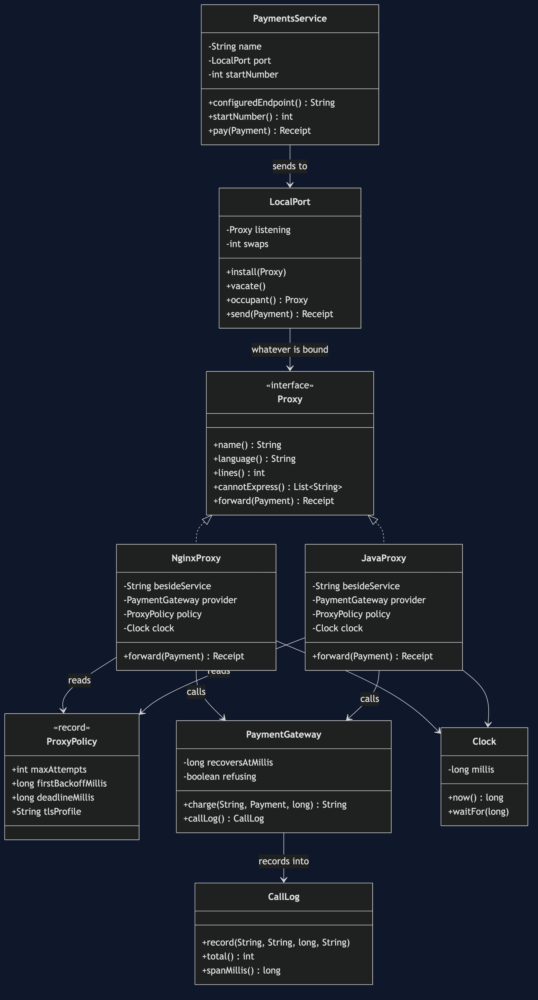
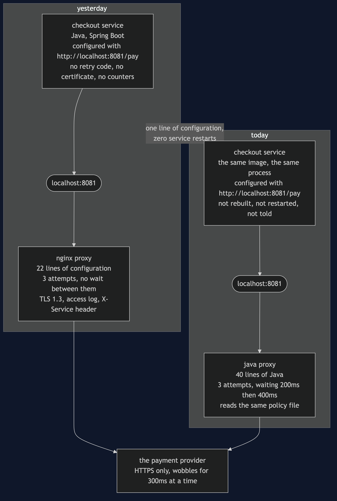
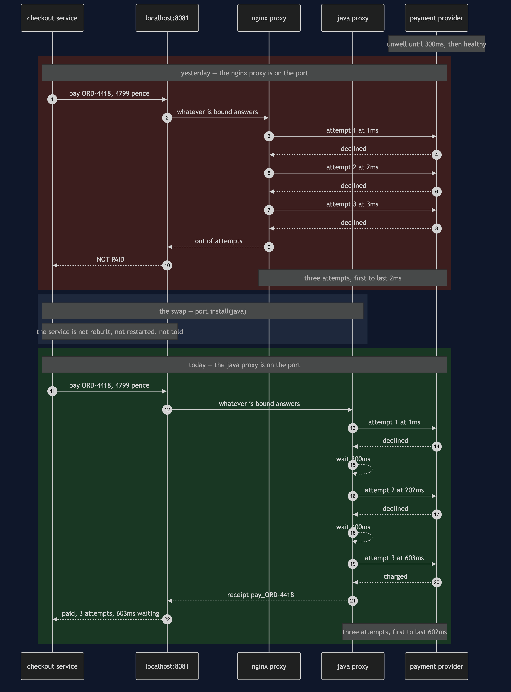
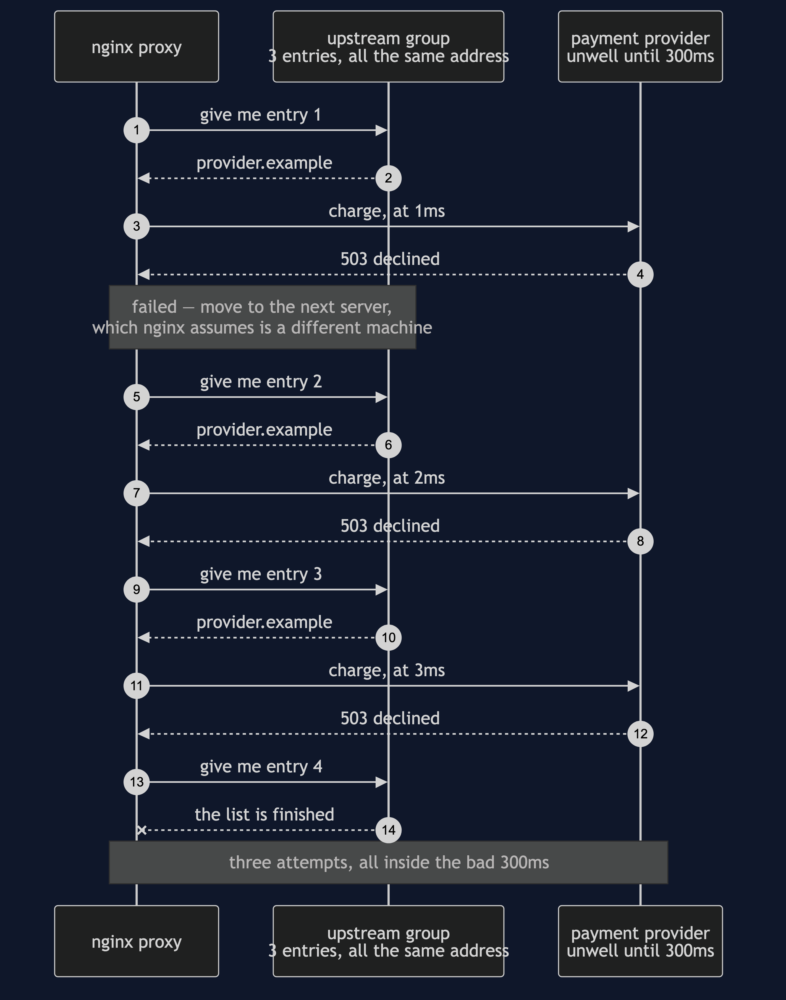
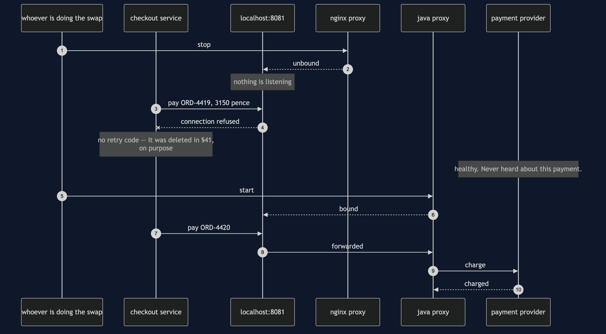
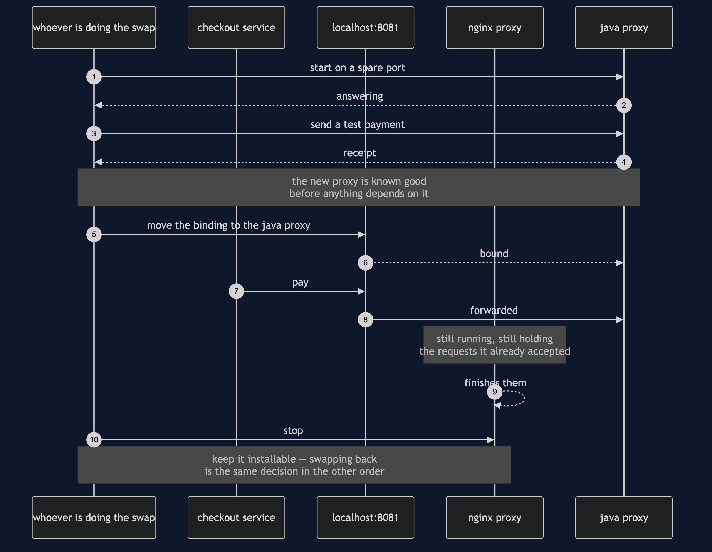
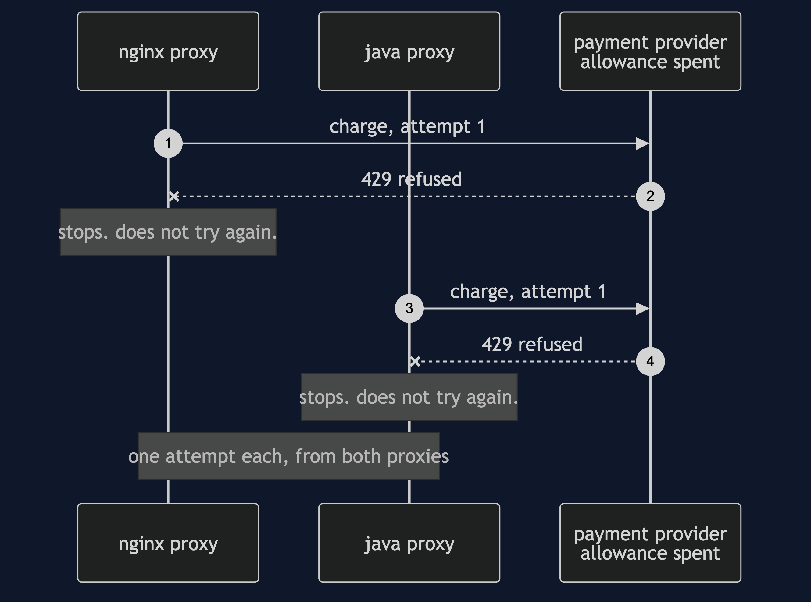

Sidecar, With the Proxy Written in Java
Change the thing next door without touching the thing it stands next to.
This is a follow-on project. Read sidecar-pattern first — it explains what a sidecar is, why the retry code left the service, and what a second process costs. Nothing here re-teaches any of that. This project takes one sentence that project left as a claim and turns it into something you watch happen.
Think about the plug on a kettle. The kettle knows nothing about the electricity — not the voltage, not which wire is live, not what the fuse is rated at. So when somebody discovers the fuse is wrong, they change the fuse. They do not open the kettle, and the kettle never knew a fuse existed. That works because the contract is a shape of socket, not a wiring diagram.
The shop's checkout service is the kettle. The proxy beside it is the plug. The contract between them is an address — localhost:8081 — which is a socket with a shape. This project changes the plug while the kettle is boiling.
The gap the last project shipped with
In March the payment provider wrote to every merchant asking for two things: at most three attempts per payment, and wait properly between them.
The shop's proxy is nginx. nginx can say the first of those. It cannot say the second.
That is not a bug and nobody wrote one. nginx has no retry counter; it has an upstream group — a list of servers — and a rule that says if this one fails, move to the next. §41's configuration lists the provider's address three times, because three entries is how you spell up to three attempts when there is only one address to talk to. Moving to the next entry happens immediately, which is exactly right when the next entry is a different machine and is probably fine. It stops being right when every entry in the list is the one supplier having one bad second.
There is no directive to fix it with. The sentence does not exist in the language.
Run
./gradlew runSeven acts. Two are the gap, one is the swap, and four are the bill.
Act 2 is the provider's bad three hundred milliseconds. A customer buys a coffee maker for £47.99, and here is what the provider recorded at its end — not what the proxy claims:
attempt at 1ms declined
attempt at 2ms declined
attempt at 3ms declined
3 attempts, first to last: 2msThree attempts spanning two milliseconds against a provider that recovered at three hundred. The whole allowance for that payment was spent before the provider had time to get better. The half of the agreement that limits the shop was kept; the half that would have helped was not.
Act 4 is the swap. Somebody writes about forty lines of Java — read the policy, try, catch, wait, double the wait, try again — and puts it on the same port beside the same service, handed the very same policy object the nginx proxy was reading:
before the swap, listening on localhost:8081: nginx
checkout is on start number: 1
checkout's configured endpoint: http://localhost:8081/pay
after the swap, listening: java-proxy
checkout is on start number: 1
checkout's configured endpoint: http://localhost:8081/pay
payments services ever started: 1The start number did not move, and that is not the demo being careful. There is exactly one place in the entire program where a payments service is constructed, and it runs before Act 1. ServiceStaysEmptyTest reads the demo's own source with the comments stripped and counts the constructions, so it stays that way.
Act 5 is the identical wobble, the identical payment and the identical allowance of three attempts:
attempt at 1ms declined
attempt at 202ms declined
attempt at 603ms charged
3 attempts, first to last: 602msRead Act 2 and Act 5 side by side and notice what is not different. Three attempts in both. The provider's allowance is untouched, the shop is not being greedier, and the change costs the provider nothing at all. Only the spacing changed — and the spacing was the difference between a customer walking away and a coffee maker being sold.
And then the bill
Act 6 is the thing Acts 4 and 5 skipped, and it is the one that will page somebody. A swap is not instant: the old proxy stops, and for a moment there is nothing on the port at all.
The provider is healthy. The network is healthy. Checkout is
healthy. A customer pays for a £31.50 kettle:
ORD-4419 £31.50 NOT PAID
connection refused to localhost:8081 — nothing is listening
attempts that reached the provider: 0Zero, on a completely healthy system, and nothing to fall back on — the service's retry code was deleted in §41 on purpose. So a real swap is a rollout, not an assignment: start the new proxy before stopping the old one, move one service at a time, and keep the old proxy installable, because the honest reason to be able to swap forwards is to be able to swap back.
Act 7 is the demonstration and the price of it:
proxy language lines
nginx nginx configuration 22
java-proxy Java 40
what nginx has no words for:
wait 200ms between attempts, doubling
what java-proxy has no words for:
nothingTwenty-two lines of somebody else's configuration became forty lines of your own code — yours to test, review, keep working on the next JDK, and fix at three in the morning. Everything nginx brought for free is gone until you write it: TLS termination, a structured access log, connection pooling, and twenty years of somebody answering security advisories before you have heard of them. A JVM now sits beside every service where a few megabytes of nginx used to sit. And nothing stops the next person putting the shop's refund rules in the proxy, because a general-purpose language will happily let them — a configuration language was a fence, and the fence is gone.
Those forty lines are the kindest possible reading, and real/ prints the unkind one. Inside one JVM the Java proxy is a retry loop and nothing else, because the program around it already exists. As an actual process it has to bind a port, read the request, present a certificate, hand an answer back and decide what to trust first, and the measured figure is 112 lines against nginx's 27. The retry loop is still only twenty-five of them. The other eighty-seven are the part nginx was doing for free, and the list above of what is still missing applies on top.
The rule
Swap the proxy when the thing you need cannot be said in the configuration language at all.
Not when it is awkward. Not when the config file has grown ugly. Not when you would rather write Java, which you would, because everybody would. Here the missing sentence was the difference between a payment going through and a payment failing, and that clears the bar. Very little else does. Most of the time the right answer is to keep nginx, accept the gap, and spend the afternoon on something that matters more.
What is worth keeping either way is that the choice was available. Because the service talks to an address rather than to a library, swapping the proxy was a decision somebody could make on a Tuesday afternoon — and swapping it back is the same decision in the other order. That optionality is what §41 actually bought, and this project is what it looks like when somebody finally spends it.
Test
./gradlew test30 tests, in about a second, with nothing random and nothing sleeping. Clock.waitFor adds to a total and returns, so a run that narrates six hundred milliseconds of backoff finishes instantly and two runs print byte-identical output — which is what lets DemoRunsTest assert every number quoted in these documents and in the video.
Three tests are worth reading before the rest.
TheSwapTestproves the swap withassertSameon the service's identity, not with behaviour. A service that merely behaves the same afterwards is a service somebody carefully rebuilt.TheSpacingTestasserts the arrival times —1, 2, 3against1, 202, 603— taken from the provider's own log, and asserts that both proxies spend exactly three attempts and that neither retries a 429. The improvement must not be greed.ServiceStaysEmptyTestreadsPaymentsService.javawith its comments stripped and fails if the words retry, backoff, timeout, keystore or tls appear in it, then counts the constructions of a payments service in the demo and asserts there is exactly one.
One JVM, no infrastructure
Tier 1 starts nothing. LocalPort is an object with one field holding whatever proxy is bound to it, and both proxies are objects. There is no socket, no TLS handshake and no process boundary — the phrase separate process is carried by the narration.
What that model is genuinely good at is the arithmetic: the arrival times, the attempt counts, and the proof that the service object is the same object afterwards. What it cannot show is the swap's real timing, which depends on how fast a new proxy accepts connections and whether the old one drains what it is holding.
For that, see real/. It runs §41's service and §41's nginx configuration in containers, starts the service once, and then swaps the proxy underneath it — so Docker's own record of when the service container started is what makes the claim checkable rather than asserted, and in the captured transcript that timestamp is identical before and after. The provider on the far end records the millisecond each attempt landed, because a proxy claiming to have waited is a claim and an arrival time is not. It is a separate Gradle build, so ./gradlew test here never resolves Spring and still passes offline.
Technologies and versions
Nothing here is a range and nothing is latest: a course that worked last year and does not work today is worse than one that never took the dependency. The Java versions are pinned in ../gradle/libs.versions.toml because Gradle can read that file, and the container tags in ../docs/pinned-versions.md because nothing can.
Tier 1 — this project. Clone it, run ./gradlew test, and it passes with no network and no Docker.
| What | Version | Why it is here |
|---|---|---|
| Java | 21 | The repository standard, requested through the Gradle toolchain block |
| Gradle | 9.2.1 | The wrapper in this directory; no separate install needed |
| JUnit 5 | 5.10.2 | The 30 tests. The only Tier 1 dependency in the whole category |
Tier 2 — real/, a separate Gradle build. None of this is on the path of ./gradlew test here.
| What | Version | Why it is here |
|---|---|---|
| Spring Boot | 4.1.1 | The payments service — §41's image, reused and not rebuilt. Rebuilding it would destroy the only claim this tier makes |
spring-boot-starter-web | with Boot 4.1.1 | The HTTP endpoint the service exposes |
spring-boot-starter-restclient | with Boot 4.1.1 | The one call the service makes, to the proxy next door |
| Spring dependency-management plugin | 1.1.7 | Applies the Boot BOM so no starter carries a version of its own |
| nginx | 1.31.5-alpine | The proxy that is there first, and the one being replaced |
| Eclipse Temurin | 21-jre-alpine | The base image for the service and for the Java proxy container |
| Docker Compose | v2 | Starts the containers by name, so only one proxy is ever bound to the port; the swap is stop on one and up -d on the other, and nothing else is touched |
The Java proxy container takes no framework at all — it is plain Java on the JDK's built-in HTTP server. A forty-line proxy that pulls in a web framework is not a forty-line proxy, and the line count is part of the argument.
Learning Material
| Document | What it covers |
|---|---|
docs/problem-statement.md | The sentence the configuration language has no words for, and why nobody wrote a bug |
docs/sidecar-java-proxy-pattern-explained.md | The kettle, the gap, the swap, and a bill longer than the benefit |
docs/class-diagram.md | The types — and the three claims a class diagram cannot show |
docs/architecture-diagram.md | What runs where, before and after, and the one box that differs |
docs/data-flow-diagram.md | The same payment down both branches, with the millisecond on every arrow |
docs/sequence-diagram.md | The two runs in call order, and the swap that has no arrow into the service |
docs/uml-diagram.md | Why nginx does not wait, the swap done badly, the swap done properly, and the rule both proxies obey |
docs/animation.html | The two proxies' attempts drawn on one timeline in a browser |
docs/prerequisites.md | What you need to know, and what you explicitly do not |
docs/session.md | A one-hour taught session with four exercises |
docs/spec.md | The generated specification, with measured test counts and timings |
docs/youtube.md | Title, description and chapters for the video |
The pattern in one picture
The class diagram, and the thing to look for is which boxes touch which. PaymentsService has two fields — a name and a LocalPort — and there is no line at all from the service to either proxy. The only line out of the service goes to the port; the only line out of the port goes to an interface. Whatever is bound to it is on the other side of that shape, and nothing in the service can tell what.

What runs where
The same machine twice: yesterday with nginx on the port, today with the Java proxy. The service is the same box in both halves — same image, same process, same start time — and the arrow out of it points at the same address either way.

How the data moves
One payment down both branches, with the millisecond marked at every attempt. Nothing in the data changed; both branches send the same bytes to the same address the same number of times, and one of them gets paid.

Who calls whom, in order
The same payment in call order. The two self-arrows on the Java proxy's lifeline — wait 200ms and wait 400ms — are the entire difference between the two halves. And notice that the swap in the middle has no arrow touching the service's lifeline, because there is nothing to send it.

The four sequences the main story walks past
One. Why nginx does not wait. It is walking a list of servers, and it believes the next one is a different machine. That belief is correct almost everywhere and wrong here, where all three entries are the same unwell address.

Two. The swap done badly. Stop the old proxy, then start the new one. In between, a healthy payment fails instantly having reached nobody — and the provider's dashboards will never show that it happened.

Three. The swap done properly. Start the new proxy, prove it answers, move the traffic, let the old one drain, and only then stop it — keeping it installable, because the fastest fix for a bad new proxy at three in the morning is the old one.

Four. The rule both proxies obey. A 429 means the allowance is spent, and retrying it is not persistence. One attempt each, from both proxies — because how many times to try and when it is pointless to try are two different decisions, and only the first one changed.

Video
The narrated walkthrough is built from video/scenes.py by video/build_video.sh. The rendered file is not committed — see the repository README for why.
Where this sits
This is pattern 42, the fifth of the platform-design-patterns as the category lists them, and the middle of three Sidecar projects. sidecar-pattern (§41) is the pattern itself and is required reading. sidecar-on-kubernetes-pattern (§43) takes the same pair and makes them one Pod, where starting, stopping and ordering stop being something a person types.
If you only remember one thing from this one, make it the narrow rule — and the reason it is narrow. A configuration language you cannot express everything in is not only a limitation. It is also a fence that stops the shop's business rules ending up in a proxy, and you take the fence down at the same moment you take the limitation away.